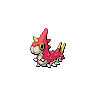

📖 英語版の図鑑説明
Likes sap and is abundant in the wild. Why it evolves into various different forms is unknown. One cannot tell from a Wurmple's appearance which form it will take when it evolves.
日本語訳
樹液を好み、野生に多く存在する。なぜ様々な姿に進化するのかは不明。進化したときにどのような姿になるのかは見た目からは分からない。
💡 英語名「Wurmple」の由来
英語名「Wurmple」は、worm（虫）、rumple（しわくちゃにする）とsimple（単純な）を組み合わせた名前と考えられている。フランス語の名前は「Chenipotte」で、chenille（イモムシ）、pote（相棒）から作られている。
出典 Bulbapedia
📊 ケムッソの種族値
HP45
こうげき45
ぼうぎょ35
とくこう20
とくぼう30
すばやさ20
合計 195
❓ よくある質問
- ケムッソの英語名は？
- ケムッソの英語名は「Wurmple」です。
- ケムッソの英語名「Wurmple」の由来は？
- 英語名「Wurmple」は、worm（虫）、rumple（しわくちゃにする）とsimple（単純な）を組み合わせた名前と考えられている。フランス語の名前は「Chenipotte」で、chenille（イモムシ）、pote（相棒）から作られている。
- ケムッソは英語版の図鑑でどう説明されている？
- 「Likes sap and is abundant in the wild. Why it evolves into various different forms is unknown. One cannot tell from a Wurmple's appearance which form it will take when it evolves.」と書かれています。日本語にすると「樹液を好み、野生に多く存在する。なぜ様々な姿に進化するのかは不明。進化したときにどのような姿になるのかは見た目からは分からない。」という意味です。
ケムッソは第3世代（ホウエン地方）のポケモンです。第3世代（ホウエン地方）の英語名一覧 →